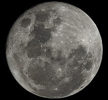

La Luna es el único satélite natural de la Tierra. Con un diámetro ecuatorial de 3476 km, es el quinto satélite más grande del sistema solar, mientras que en cuanto al tamaño proporcional respecto a su planeta es el satélite más grande: un cuarto del diámetro de la Tierra y 1/81 de su masa. Es, además, después de Ío, el segundo satélite más denso. Se encuentra en relación síncrona con la Tierra, siempre mostrando la misma cara hacia el planeta. El hemisferio visible está marcado con oscuros mares lunares de origen volcánico entre las brillantes montañas antiguas y los destacados astroblemas.
